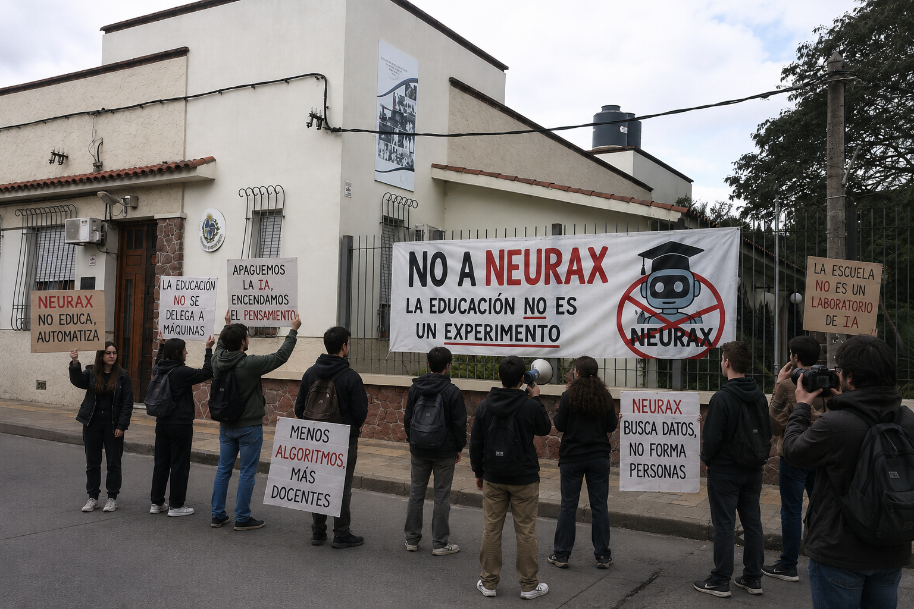

Manifestación contra Neurax terminó con incidentes frente a una institución educativa
Estudiantes y docentes reclamaron una educación humana, crítica y sin algoritmos que reemplacen el pensamiento.

Lo que comenzó como una concentración pacífica contra la implementación de Neurax en centros educativos, escaló en tensión durante la tarde.
Los manifestantes cuestionan el uso de inteligencia artificial en el aula y advierten sobre la posible pérdida del vínculo humano en los procesos de enseñanza.
Desde la organización señalaron que la educación “no puede reducirse a datos, métricas y automatizaciones”.